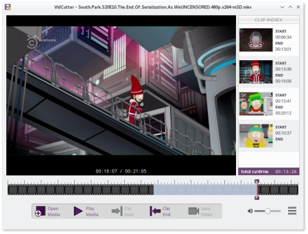

VidCutter
Cross-platform Qt5 based app for quick and easy video trimming/splitting and merging/joining for simple quick edits. FFmpeg based backend, which is supplied for Windows, and written in Python3 with the excellent PyQt5 GUI framework.


Nearing first phase of completion.